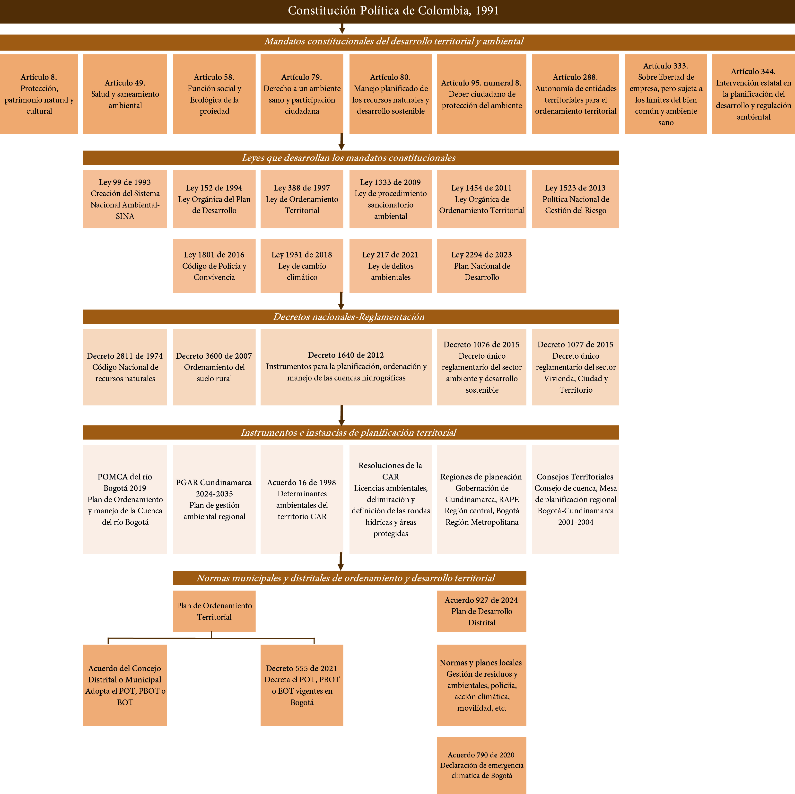
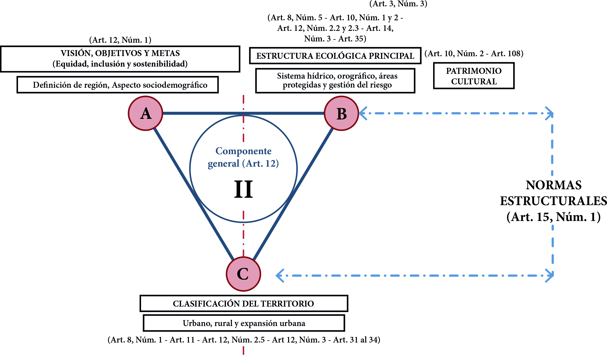
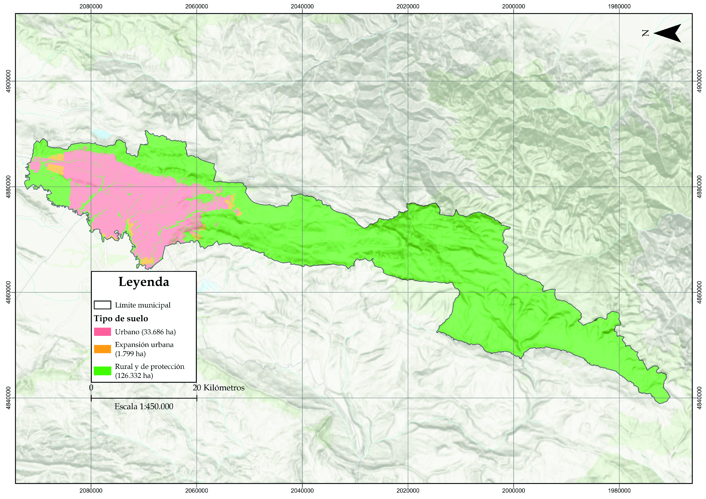

Unidad 4.3 Evolución, ordenamiento y clasificación del territorio
Esta Sección explora los mandatos constitucionales, leyes, decretos, acuerdos, instituciones e instrumentos en las escalas nacional, regional y local que intervienen en la planificación del territorio y la gestión ambiental. El ordenamiento territorial se conceptualiza no solo como un instrumento de planificación, sino como un proceso de concertación socioecológica complejo. Su objetivo es organizar las actividades humanas para fluir armónicamente con las dinámicas naturales del territorio —hidro climáticas, geofísicas, ecológicas—, superando visiones antropocéntricas.
Aquí se explora cómo el ordenamiento territorial surge de la clasificación del suelo en los usos de protección ambiental, rural, urbano, expansión urbana, y en riesgo de desastres según la ley. El enfoque para la definición de la clasificación del suelo, además de regional debe ser preventivo y protector del patrimonio natural, participativo, reparativo para los afectados por injusticias ambientales, justificado con bases científicas y técnicas, y ejerciendo las herramientas dispuestas en la ley.
Este ejercicio debe ser consensuado en los concejos de los municipios y el Distrito Capital, y entre ellos, para disminuir riesgos por detrimentos a la seguridad territorial, y que el ordenamiento del territorio sea participativo, posible, efectivo, incluyente, seguro, justo, y potencie la calidad ambiental y de vida de los habitantes. Lo anterior con el fin de reducir las tensiones, conflictos e injusticias durante la transición socioecológica, promover transformaciones territoriales para la sostenibilidad a lo largo del territorio, dentro del modelo de desarrollo y ordenamiento territorial actual.
1.1. Marco jurídico y conflictos territoriales
Es urgente el análisis crítico y desde el pensamiento complejo de la forma actual de ordenamiento territorial, con el que se reconoce que los ciudadanos forman parte del sistema socioecológico adaptativo —que incluye la geografía, el agua, los componentes del ecosistema, la infraestructura, tecnologías, las instituciones y la ley— de la Sabana de Bogotá, y tienen la responsabilidad de desarrollar y aplicar un marco jurídico mediante instituciones, planes e instrumentos eficaces para gestionarlo integralmente.
El marco jurídico es la herramienta para lograr una transformación cultural para una transición socioecológica justa y sostenible, mitigando conflictos y respetando la capacidad de carga del territorio. Si bien el marco jurídico e institucional del ordenamiento territorial en Colombia, se erige sobre principios sólidos de sostenibilidad, equidad y participación, su implementación enfrenta tensiones estructurales y críticas sustanciales, que es imperativo reconocer para avanzar hacia una gestión realmente efectiva y legítima del territorio.
No obstante, ni los habitantes ni las instituciones siempre son conscientes de formar parte de sistema socioecológico ni de las tensiones y críticas estructurales, o simplemente no tienen los conceptos ni las herramientas necesarias para comprenderlo, y en estos casos pueden actuar desde perspectivas individualistas y simples —incorporando “ruido” o comportamientos desestabilizadores en la dinámica del sistema—, lo cual perturba su armonía 1.
En la siguiente imagen se estructura el marco jurídico de planeación y desarrollo territorial vigente en Colombia y que responde a los mandatos constitucionales para lograr la sostenibilidad territorial, basados en la ecología, el ambientalismo complejo, la planificación y gestión del ordenamiento territorial.
Imagen 23. Marco jurídico de planeación y desarrollo territorial

Fuente: Elaboración Sociedad de Mejoras y Ornato de Bogotá.Es importante reconocer que en Colombia y en Bogotá Sabana, hay multiplicidad de instrumentos de planeación —Plan de Desarrollo Nacional, Plan de Ordenamiento del Recurso Hídrico, Plan de Ordenamiento y Manejo de Cuencas Hidrográficas, Planes de Ordenamiento Territorial, Planes de Desarrollo Local y Distrital—, y diferentes fronteras político administrativas —RAPE Región Central, Región Metropolitana, Distrito Capital, municipios, departamento de Cundinamarca— que, por no ser construidos conjuntamente desde un principio, lejos de articularse sinérgicamente, suele generar un panorama fragmentado y contradictorio.
Si varias autoridades comparten un solo territorio, o toman decisiones sobre una misma región, necesariamente tienen que ponerse de acuerdo para que esas decisiones sean tomadas en una misma dirección. De lo contrario, unas decisiones anulan o neutralizan a otras, lo cual, en últimas, se traduce en desperdicio de recursos y oportunidades, pérdida de calidad de vida para los habitantes del territorio, debilitamiento institucional y pérdida de gobernabilidad, menor productividad y, en consecuencia, menor capacidad para competir en los mercados nacionales e internacionales. La paradoja del ordenamiento territorial está en la existencia de un marco jurídico robusto en el papel, pero una aplicación fragmentada y conflictiva en la realidad.
Debido a esto, el ordenamiento del territorio es ineficiente e inefectivo, lo que a su vez genera conflictos socioecológicos, injusticias ambientales y la percepción de que no se avanza en la sostenibilidad territorial. Por esto es importante que haya unas normas simples y claras, que no entren en conflicto entre sí, y que tengan nomenclaturas y conceptos unificados para todos los municipios en términos de clasificación y uso del suelo para facilitar su gestión, que la visión regional sea coherente con la local, y prevenir conflictos socioambientales.
1.2. Ley 388 de 1997- Ley de Ordenamiento Territorial
Uno de los objetivos de la Ley 388 de 1997 2 es: “El establecimiento de los mecanismos que permitan al municipio, en ejercicio de su autonomía, promover el ordenamiento de su territorio, el uso equitativo y racional del suelo, la preservación y defensa del patrimonio ecológico y cultural localizado en su ámbito territorial y la prevención de desastres en asentamientos de alto riesgo, así como la ejecución de acciones urbanísticas eficientes” 3. En el artículo 2° de esta ley se dictan los principios del ordenamiento:
· La función social y ecológica de la propiedad.
· La prevalencia del interés general sobre el particular.
· La distribución equitativa de las cargas y los beneficios.
Las entidades territoriales tienen el deber y el derecho de planificar el ordenamiento territorial, para lo cual se formulan los Planes de Ordenamiento con un plazo de doce años, siguiendo las normas y leyes que se dictan a nivel nacional y regional. El ordenamiento territorial debe ser un proceso de concertación real y efectivo entre individuos y colectivos humanos, y entre ellos, y todos los componentes no humanos que han determinado las condiciones del territorio aun desde muchos siglos antes que existiéramos aquí, para no imponer a la fuerza las prioridades humanas a los territorios y a sus dinámicas naturales —hidro climáticas, geológicas, ecológicas—. Ordenar el territorio es organizar las actividades humanas de manera que fluyan armónicamente con el componente natural del territorio y sus dinámicas.
El artículo 4 habla de la participación democrática en el ordenamiento territorial: “En ejercicio de las diferentes actividades que conforman la acción urbanística, las administraciones municipales, distritales y metropolitanas deberán fomentar la concertación entre los intereses sociales, económicos y urbanísticos, mediante la participación de los pobladores y sus organizaciones”.
La sociedad tiene derecho a ejercer su poder político para lograr promover una perspectiva transicional, que no aplace indefinidamente las reformas que requiere el Estado para la sostenibilidad territorial, sin destruir la institucionalidad del Estado, la potencia del mercado, ni las formas de organización de la sociedad civil que dictan las realidades territoriales locales o regionales.
Imagen 24. Estructura de los POT/PBOT/EOT según la Ley 388 de 1997

Fuente: Elaboración Sociedad de Mejoras y Ornato de Bogotá con base a la Ley 388 de 1997.Dentro del ámbito del ordenamiento territorial, las acciones urbanísticas de protección del medio ambiente, la clasificación del suelo y visión del territorio entendida como el conjunto de objetivos y estrategias para fomentar la sostenibilidad territorial y el desarrollo a largo plazo, cuentan con una prevalencia superior sobre las demás normas y se enmarcan en el componente general del Plan de Ordenamiento Territorial. La planificación, en ocasiones, se revela como un ejercicio susceptible de ser modificado por intereses políticos coyunturales o poderes económicos, lo que vacía de contenido el principio de planificación a largo plazo y menoscaba la seguridad jurídica. Por esto, este ejercicio se debe reevaluar con base en principios éticos y culturales que valoren la civilidad, la calidad ambiental del paisaje, la justicia ambiental y el valor intrínseco de la naturaleza, para fomentar transformaciones territoriales para la sostenibilidad.
1.3. Clasificación del territorio
La Ley 388 de 1997 define la clasificación del territorio de los municipios y distritos en suelo urbano, rural y de expansión urbana. Al interior de estas clases podrán establecerse la categoría de suelo de protección, y en el rural la categoría de suelo suburbano, de conformidad con los criterios generales establecidos en la ley 4.
Esta clasificación debe estar sustentada en información técnica y científica de acuerdo con las características biofísicas, geofísicas, hídricas, culturales y demográficas utilizando las herramientas y conceptos, para cumplir con la prevalencia del interés general sobre el particular, la preservación de la calidad ambiental, evitar pasar por encima de los límites biofísicos y las determinantes ambientales del territorio, y una urbanización injustificada o desordenada.
1.3.1. Suelo urbano
Constituyen el suelo urbano, las áreas del territorio distrital o municipal destinadas a usos urbanos por el plan de ordenamiento, que cuenten con infraestructura vial y redes primarias de energía, acueducto y alcantarillado, posibilitándose su urbanización y edificación, según sea el caso. Podrán pertenecer a esta categoría aquellas zonas con procesos de urbanización incompletos, comprendidos en áreas consolidadas con edificación, que se definan como áreas de mejoramiento integral en los planes de ordenamiento territorial. Las áreas que conforman el suelo urbano serán delimitadas por perímetros y podrán incluir los centros poblados de los corregimientos. En ningún caso el perímetro urbano podrá ser mayor que el denominado perímetro de servicios públicos o sanitarios 5.
1.3.2. Suelo de expansión urbana
Constituido por la porción del territorio municipal destinada a la expansión urbana, que se habilitará para el uso urbano durante la vigencia del Plan de Ordenamiento, según lo determinen los programas de ejecución. La determinación de este suelo se ajustará a las previsiones de crecimiento poblacional de la ciudad 6 y a la posibilidad de dotación con infraestructura para el sistema vial, de transporte, de servicios públicos domiciliarios, áreas libres, y parques y equipamiento colectivo de interés público o social 7 .
Dentro de la categoría de suelo de expansión podrán incluirse áreas de desarrollo concertado, a través de procesos que definan la conveniencia y las condiciones para su desarrollo mediante su adecuación y habilitación urbanística a cargo de sus propietarios, pero cuyo desarrollo estará condicionado a la adecuación previa de las áreas programadas8 .
Es importante ser críticos sobre la categoría misma de “suelo de expansión urbana” ya que puede llegar a ser insostenible, al naturalizar el crecimiento perpetuo de la huella urbana sobre ecosistemas estratégicos y suelos con potencial agropecuario. El verdadero desafío, desde esta mirada, no radica en dónde crecer, sino en cómo transitar hacia modelos de redensificación que prioricen la regeneración socioecológica por encima de la lógica expansiva.
1.3.3. Suelo rural
Constituyen esta categoría los terrenos no aptos para el uso urbano, por razones de oportunidad, o por su destinación a usos agrícolas, ganaderos, forestales, de explotación de recursos naturales y actividades análogas 9. En el marco del artículo 61 de la Ley 99 de 1993 estos son los suelos necesarios para poder materializar el carácter agrícola y forestal, indispensable por el interés ecológico nacional que tiene la Sabana de Bogotá.
1.3.4. Suelo suburbano
Constituyen esta categoría las áreas ubicadas dentro del suelo rural, en las que se mezclan los usos del suelo y las formas de vida del campo y la ciudad, diferentes a las clasificadas como áreas de expansión urbana, que pueden ser objeto de desarrollo con restricciones de uso, de intensidad y de densidad, garantizando el autoabastecimiento en servicios públicos domiciliarios, de conformidad con lo establecido en la Ley 99 de 1993 y en la Ley 142 de 199410 .
Podrán formar parte de esta categoría los suelos correspondientes a los corredores urbanos interregionales. Los municipios y distritos deberán establecer las regulaciones complementarias tendientes a impedir el desarrollo de actividades y usos urbanos en estas áreas, sin que previamente se surta el proceso de incorporación al suelo urbano, para lo cual deberán contar con la infraestructura de espacio público, de infraestructura vial y redes de energía, acueducto y alcantarillado requerida para este tipo de suelo 11.
1.3.5. Suelo de protección
Constituido por las zonas y áreas de terreno localizados dentro de cualquiera de las anteriores clases, que, por sus características geográficas, paisajísticas o ambientales, o por formar parte de las zonas de utilidad pública para la ubicación de infraestructuras para la provisión de servicios públicos domiciliarios o de las áreas de amenazas y riesgo no mitigable para la localización de asentamientos humanos, tiene restringida la posibilidad de urbanizarse 12. Este tipo de suelo debe basarse en las leyes, instrumentos e información generada por el Sistema Nacional Ambiental para que haya una protección del componente natural del territorio y evitar los conflictos socioecológicos, con una base técnica y científica muy fuerte.
1.3.6. Clasificación del suelo de Bogotá y la Región
Mapa 19. Clasificación del suelo de Bogotá según Decreto 555 de 2021

Fuente: Elaboración Sociedad de Mejoras y Ornato de Bogotá con información de SINUPOT.Mapa 20. Clasificación del suelo en el área de estudio de los POT/PBOT/EOT vigentes
 Fuente: Elaboración Sociedad de Mejoras y Ornato de Bogotá con información de IDECA.
Fuente: Elaboración Sociedad de Mejoras y Ornato de Bogotá con información de IDECA.
Las transformaciones territoriales, en todas las escalas, para la transición socioecológica hacia la sostenibilidad territorial se deben plantear y realizar de acuerdo con el tipo de suelo para potenciar las diferentes dimensiones de la seguridad territorial a la que cada tipo de suelo puede aportar.
A lo largo de esta Unidad se identifican los instrumentos de planificación y gestión del territorio como: las responsabilidades y disposiciones de las diferentes instituciones gubernamentales para la protección y desarrollo del territorio, la Región Hídrica de Bogotá como unidad de gestión territorial, la Estructura Ecológica Principal para proteger y delimitar el Sistema Ambiental de Bogotá, una mirada crítica de la evolución de la ocupación del territorio y los tratamientos urbanísticos disponibles para materializar el ordenamiento.
Todo esto sin olvidar el rol esencial que, como individuos y colectivos públicos y privados, se tiene en la generación de unos valores éticos y culturales que reconozcan y propicien la sostenibilidad territorial en el paisaje.
Desde enfoques críticos y comunitarios, se señala que el ordenamiento territorial puede devenir en un instrumento de control estatal que, al definir la legalidad del uso del suelo, legitima dinámicas de poder, exclusión y despojo. Comunidades ancestrales o sectores populares pueden verse vulnerados cuando sus territorios son declarados de manera que cambien sus formas de vida, sin que esto lo medien procesos de concertación genuina o soluciones de reubicación adecuadas que distribuyan equitativamente las cargas y beneficios. Así, el potencial participativo de los instrumentos de planeación a menudo se diluye en mecanismos que no logran captar la complejidad de los saberes locales ni contrarrestar las asimetrías de poder.
Reconocer estas críticas no invalida el marco normativo, sino que lo sitúa en su contexto real de disputa que merece ser revisado. La evolución hacia un ordenamiento territorial legítimo y efectivo dependerá de su capacidad para innovar en mecanismos de gobernanza regional, blindar los instrumentos técnicos frente a la interferencia política e intereses privados, garantizar una participación incidente y traducir sus principios en transformaciones territoriales humanas, concretas que cierren la brecha entre la teoría y la práctica, entre el derecho y el territorio vivido.
Sección 4.3.2 La Región hídrica de Bogotá y su Estructura Ecológica Principal Sección 4.3.3 Evolución de la ocupación del territorio Sección 5.1.2 Sistema de Servicios Públicos Sección 5.1.3 Sistema de espacio público
Footnotes
-
Manuel Guzmán Henessey. La construcción del territorio sostenible. Un asunto complejo. Transiciones y complejidad: El desafío de Bogotá 2020-2050 (Bogotá: Sociedad de Mejoras y Ornato de Bogotá, 2018), 65. ↩
-
“Por la cual se modifica la Ley 9a de 1989, y la Ley 2° de 1991 y se dictan otras disposiciones”. ↩
-
Artículo 1°. ↩
-
Capítulo IV: artículo 30. ↩
-
Capítulo IV: artículo 31. Adicional ver Decreto Nacional 1337 de 2002. ↩
-
Vea las proyecciones de Población de Bogotá y la Sabana en DATACIVILIDAD ↩
-
Capítulo IV: artículo 32. Reglamentado parcialmente por el Decreto Nacional 2181 de 2006; y adicional ver Decreto Nacional 1337 de 2002. ↩
-
Ibid. ↩
-
Capítulo IV: artículo 33. Ver Decreto Nacional 1337 de 2002: artículo 21, y la Ley 1469 de 2011. ↩
-
Capítulo IV: artículo 34. Ver Decreto Nacional 1337 de 2002, y Decreto Nacional 3600 de 2007. ↩
-
Ibid. ↩
-
Capítulo IV: artículo 35. ↩